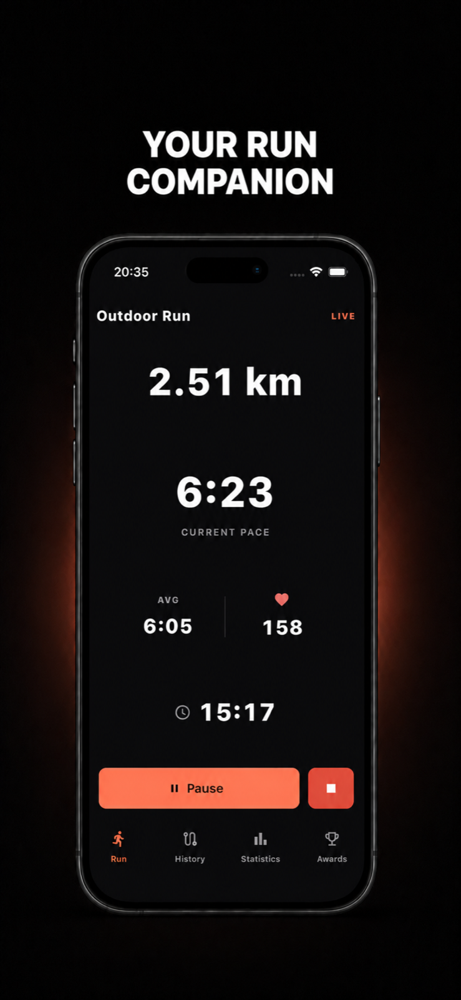
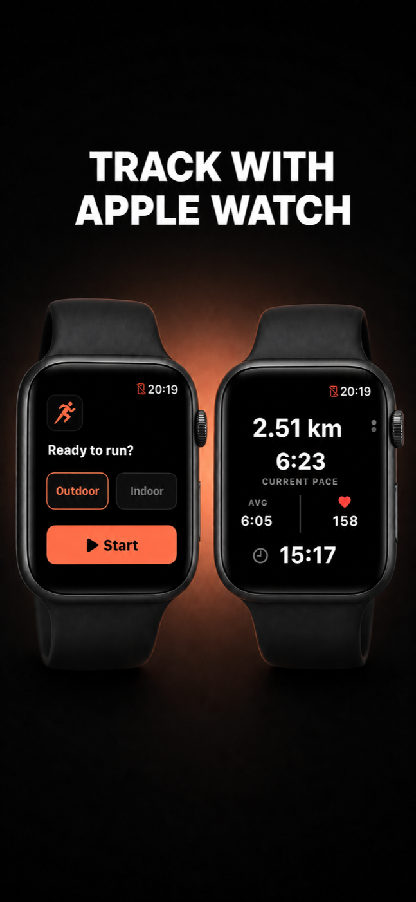

Live essentials
Keep distance, current pace, average pace, heart rate, and elapsed time visible while you run.
Built for the next kilometre
Runise keeps the essentials in view—your route, your rhythm, your progress—so the run stays yours.

Keep distance, current pace, average pace, heart rate, and elapsed time visible while you run.
Return to previous sessions and the details that help you understand your running rhythm.
See statistics and milestones without getting buried under noise or needless comparison.

Start an outdoor or indoor run from Apple Watch and keep the numbers that matter close—even when your phone stays away.
Good running tools should create clarity, then disappear. Runise is a focused companion for the route, the rhythm, and what comes next.